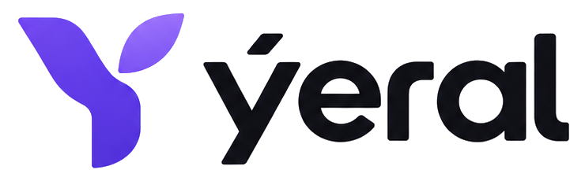

Описание проекта · октябрь 2026Полный текстовый отчёт: что мы делали, в каком порядке, какие запросы были и какие решения приняты. Документ собран по итогам всех заходов и по содержимому файлов проекта.
Yeral — два связанных мобильных приложения для бьюти- и wellness-услуг.
Ключевой принцип: каждое действие салона имеет ответный экран у клиента, а статусы записи одинаковы в обоих приложениях. Салон подтверждает заявку вручную — никакого автоназначения.
#5a3ff0, тёмный текст акцента #4429d6, лавандовая подложка #efecfe), графит #101014.Запрос: привести в порядок кнопки и дизайн Product Deck.
#4429d6 на #efecfe); под экранами бизнеса — чёрный текст и градиентная точка-маркер.Запрос: добавить после 17-го слайда отдельный блок аналитики — конкуренты и потенциальная выручка; ограничение в 20 слайдов снято. Добавлено 7 слайдов (18–24), этапы сдвинулись на 25–27.
Логотипы конкурентов не воспроизводились — вместо них монограммы в лавандовых плитках. Настоящие иконки подставим, если будут файлы.